当前 depth-only 点数493
当前 depth-only 周期17 / 30 px
组合响应参考点数64
实例骨架 junction931
推荐方案06_surface_ir_assisted_curve
总耗时5813.9 ms
结论
推荐：06_surface_ir_assisted_curve。离线代理指标下响应支撑强、点数不膨胀、重复近邻少；运行建议作为几何主候选，实例骨架只做验证/补召回。
注意：本 snapshot 没有人工标注真值，因此表格分数是代理指标，不等同于真实精度。它适合判断哪条路线更稳、更少过检，以及是否值得进入现场标注验证。
全量对比
| 方案 | 名称 | 点数 | 线数 | 融合响应 | Hessian | 补全面 | 二值支撑 | 近重复 | 代理分 | 说明 |
|---|---|---|---|---|---|---|---|---|---|---|
06_surface_ir_assisted_curve |
06 组合响应辅助曲线 | 64 | [8, 8] | 0.981 | 0.762 | 0.997 | 0.95 | 0 | 0.933 | 以组合响应、Frangi-like、补全面共同形成的多模态底图做曲线收束。 |
05_surface_ridge_curve |
05 补全面 ridge 曲线 | 64 | [8, 8] | 0.971 | 0.746 | 0.993 | 0.95 | 0 | 0.923 | 以补全钢筋面作为底图，动态规划分数加入中间强、两侧弱的 ridge 判断。 |
04_surface_dp_curve |
04 补全面 DP 曲线 | 64 | [8, 8] | 0.970 | 0.744 | 0.992 | 0.95 | 0 | 0.922 | 以补全钢筋面作为底图，动态规划约束相邻采样点偏移连续。 |
fused_instance_axis_family |
融合实例响应线族 | 64 | [8, 8] | 0.921 | 0.695 | 0.957 | 0.86 | 0 | 0.871 | 直接在组合响应 + 深度 + Frangi 融合底图上估行列线族。 |
completed_surface_intersections |
补全钢筋面交点 | 64 | [8, 8] | 0.921 | 0.695 | 0.957 | 0.86 | 0 | 0.871 | 先做实例候选分割，再用线族支撑补全钢筋面后求交点。 |
depth_pr_fprg_peak_supported |
深度响应 PR-FPRG 线族 | 64 | [8, 8] | 0.869 | 0.700 | 0.933 | 0.84 | 0 | 0.852 | 以 depth_background_minus_filled 作为底图的峰值支撑线族。 |
hessian_axis_family |
Hessian ridge 线族 | 64 | [8, 8] | 0.889 | 0.677 | 0.947 | 0.78 | 0 | 0.850 | 直接在 Hessian ridge 底图上估行列线族。 |
frangi_axis_family |
Frangi-like 线族 | 64 | [8, 8] | 0.889 | 0.677 | 0.947 | 0.78 | 0 | 0.850 | 直接在多尺度 Frangi-like 脊线底图上估行列线族。 |
combined_pr_fprg_peak_supported |
组合响应 PR-FPRG 线族 | 64 | [8, 8] | 0.851 | 0.666 | 0.913 | 0.80 | 0 | 0.824 | 以 combined_depth_ir_darkline 作为底图的峰值支撑线族。 |
03_surface_greedy_curve |
03 补全面 greedy 曲线 | 64 | [8, 8] | 0.859 | 0.632 | 0.926 | 0.83 | 0 | 0.821 | 以补全钢筋面作为底图，沿补全后的线族拓扑做局部 ridge 贪心曲线，再求曲线交点。 |
instance_graph_junctions_raw |
实例骨架 junction 原始聚类 | 217 | [] | 0.975 | 0.698 | 0.954 | 1.00 | 0 | 0.722 | 直接聚类骨架 junction；召回强但容易过检，建议只作为候选源。 |
current_depth_only_runtime |
当前扫描 depth-only 运行逻辑 | 493 | [29, 17] | 0.716 | 0.507 | 0.742 | 0.52 | 0 | 0.472 | 复刻 MODE_SCAN_ONLY 当前 depth-only 周期/相位铺网格逻辑。 |
图像证据
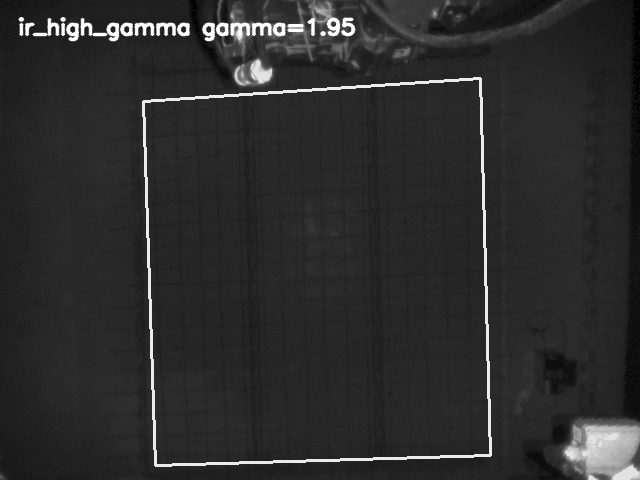
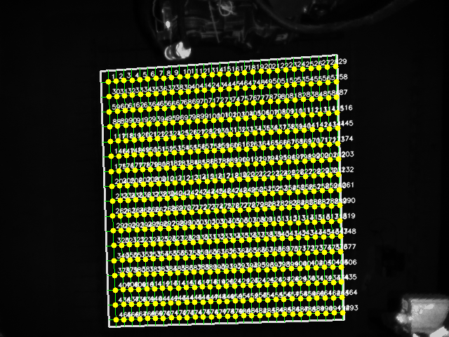

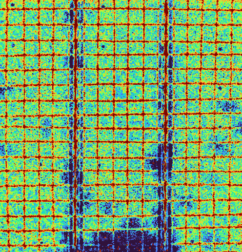
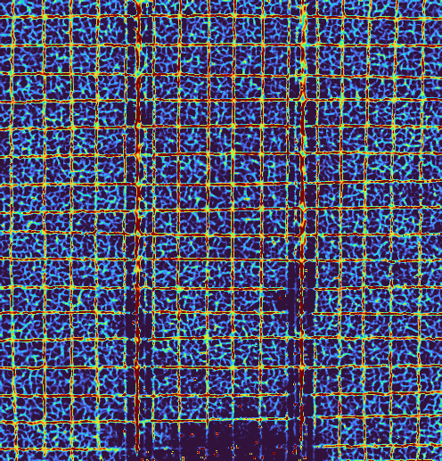
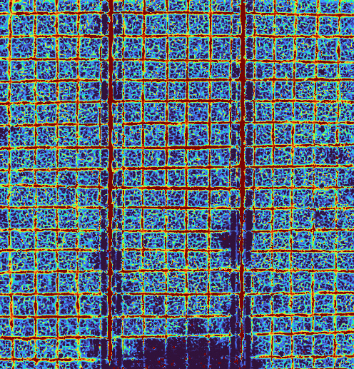
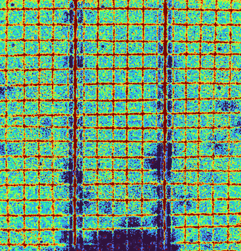
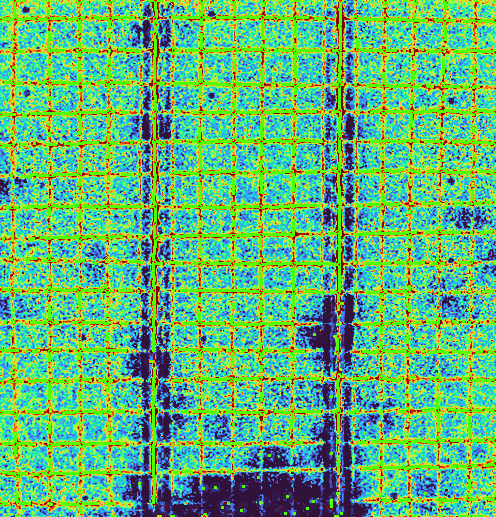
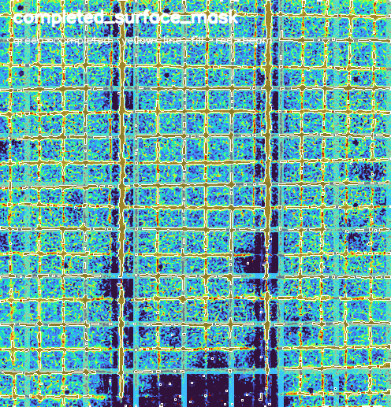
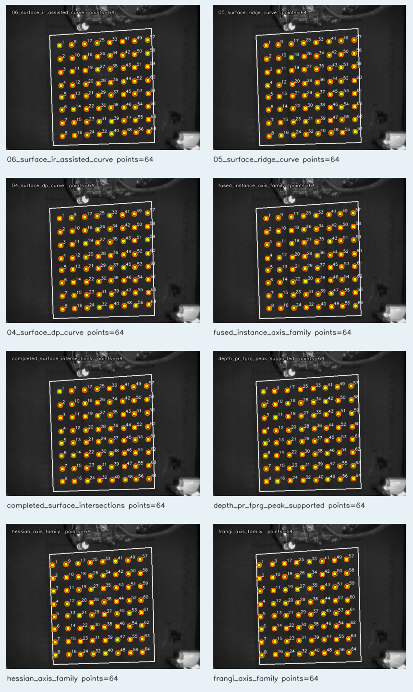
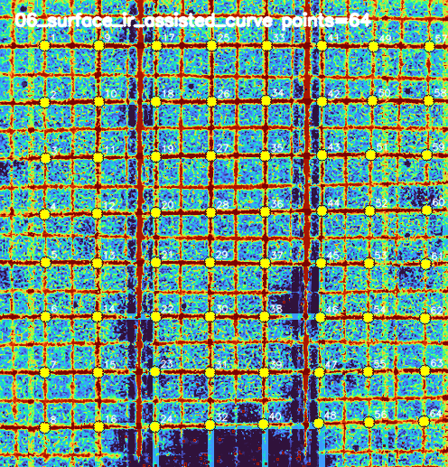
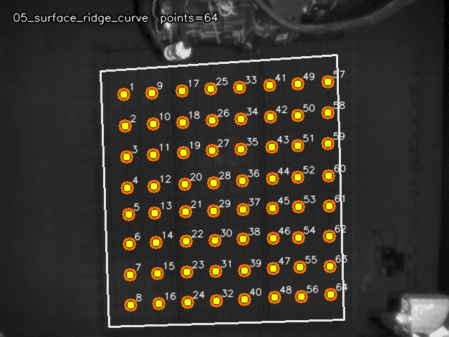
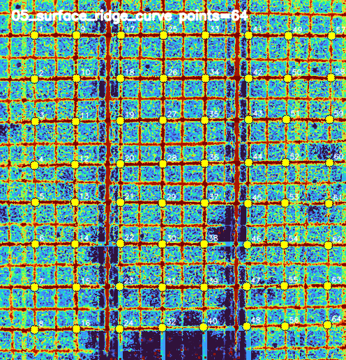
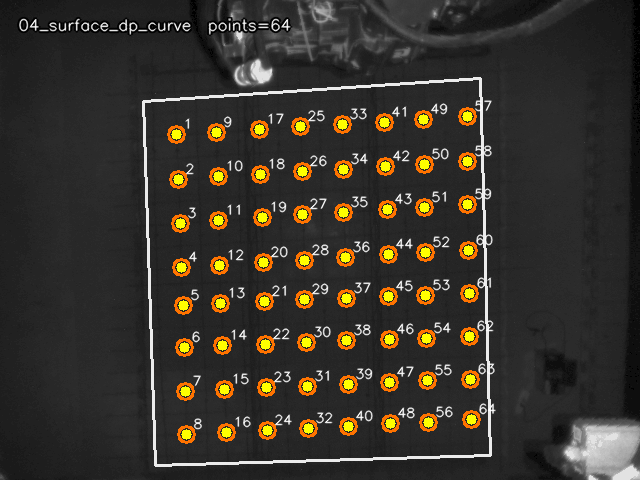
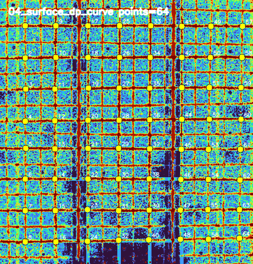
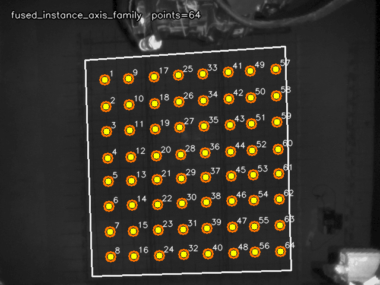
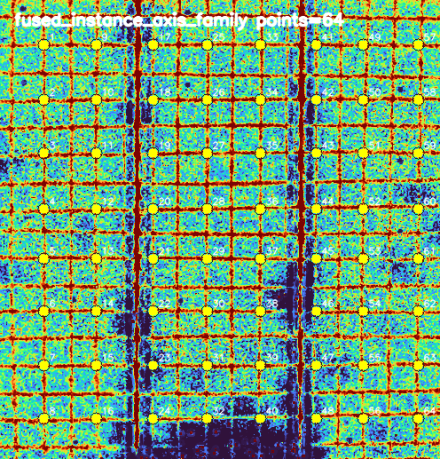
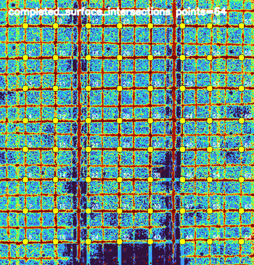
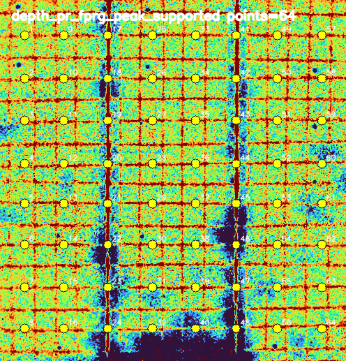
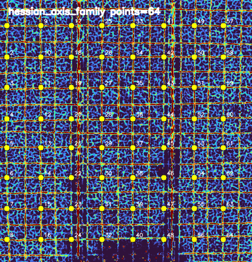
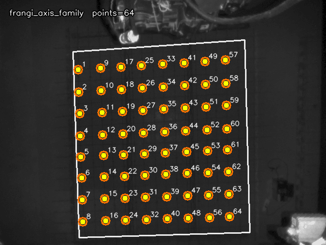
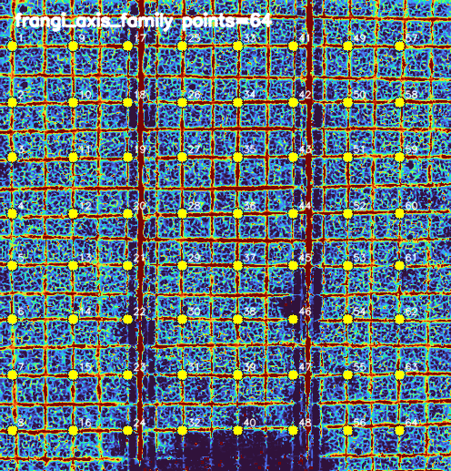